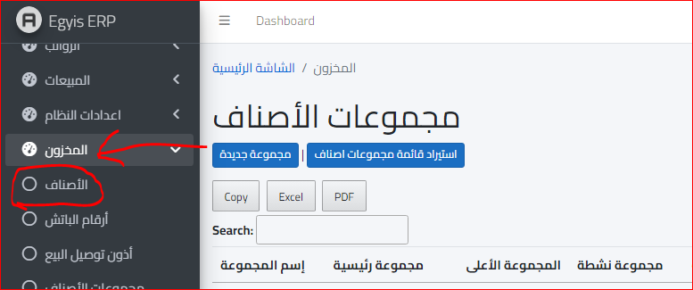
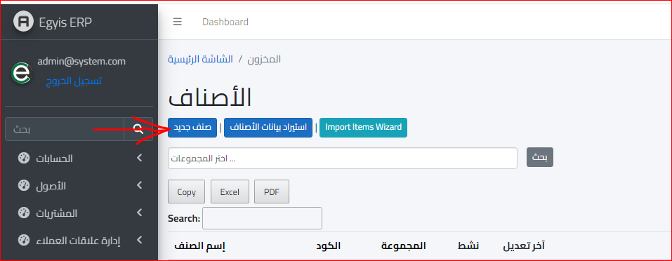
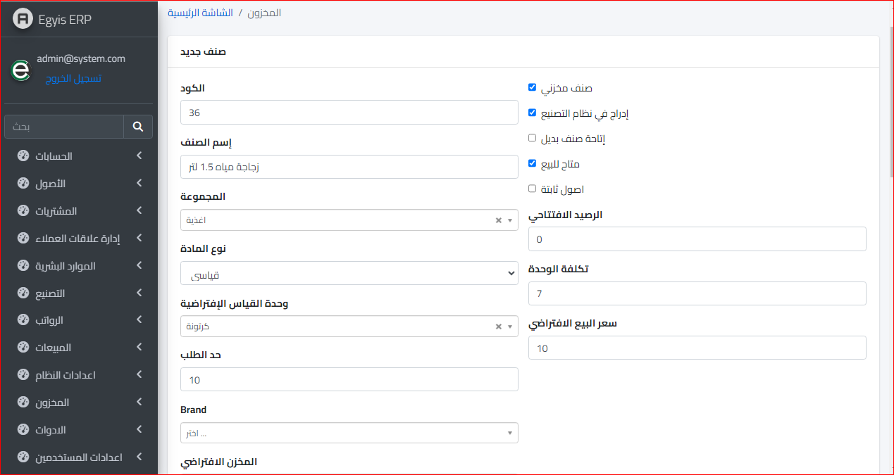
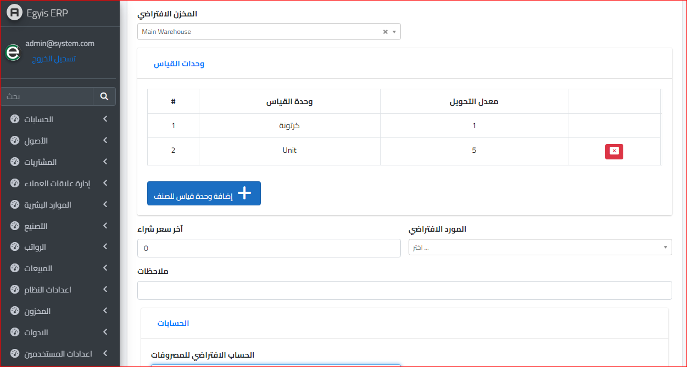
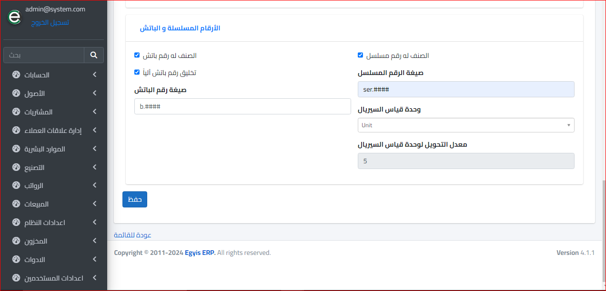

الاصناف
وبعد ذلك نختار قائمة الأصناف من موديول المخزون كالتالي :
ستفتح الشاشة التالية :
ونختار صنف جديد و سيتم توجيهنا الى الشاشة التالية :
  الكود: هذا هو كود الصنف الذي أدخله، مثل بطاقة تعريف.
اسم الصنف: اسم المنتج.
المجموعة: أختار نوع مجموعة الصنف، مثلًا إذا كان غذائيًا، سأختار المجموعة الغذائية.
نوع المادة: أختاره حسب طبيعة المادة، حيث تختلف وحدة القياس الافتراضية.
وحدة القياس الافتراضية: تحدد حسب طبيعة المادة، مثل زجاجة ماء تقاس بالواحدة ، وليس بالمتر أو الكيلو.
الرصيد الافتتاحي: يعني رصيد الصنف الجديد، وعادة يكون صفر عند إدخاله لأول مرة.
تكلفة الوحدة: أدخل التكلفة هنا لتعرفها عند الشراء.
سعر البيع الافتراضي: السعر المبدئي الذي أحدده للصنف.
حد الطلب: الحد الأدنى الذي يجب أن يصل إليه الصنف ليتم الطلب منه.
براند: الماركة الخاصة بالصنف.
المخزن الافتراضي: المخزن الذي تذهب إليه المشتريات تلقائيًا.
المورد الافتراضي: المورد الذي ستشتري منه الصنف تلقائيًا.
آخر سعر للشراء: آخر سعر اشترينا به، لمتابعة تطور سعر الشراء.
الحساب الافتراضي للمصروفات : الحساب الذي سيسجل فيه المصروفات الخاصة بالصنف
الأرقام المسلسلة والباتش: اذا اردنا ان نضع رقم سيريال للصنف
ثم بعد الانتهاء يتم نقر زر حفظ